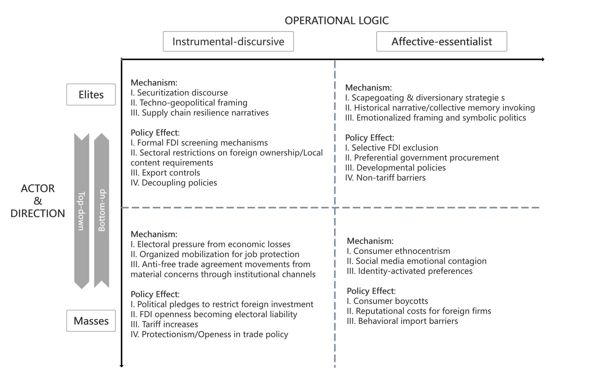
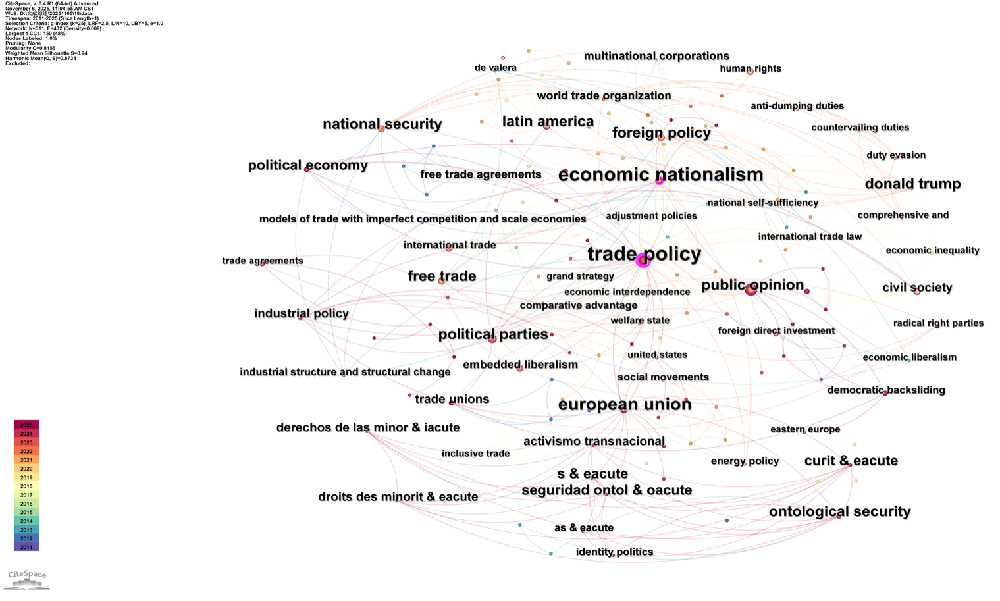
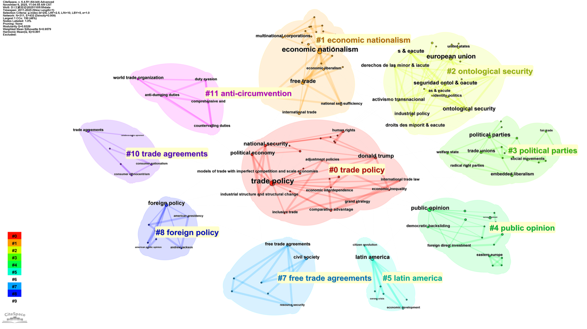
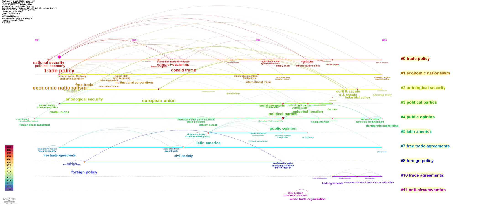
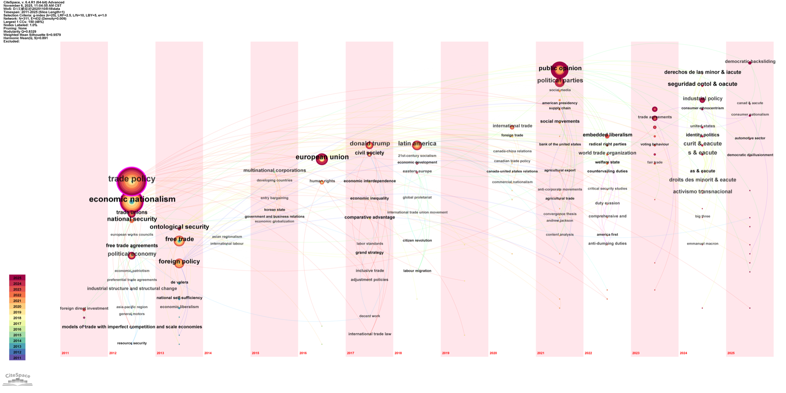
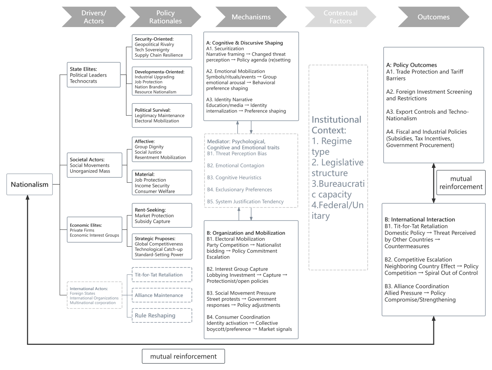

Why it matters
Since the 2008 financial crisis and the populist wave that followed, nationalism has returned as a serious explanatory factor in international political economy. Early liberal approaches treated it as a nuisance variable. More recent work takes it seriously, and shows that it shapes trade, investment, sanctions, and aid. The problem is that this body of work is scattered. There is still no shared framework for how different kinds of nationalism, pushed by different actors and working through different mechanisms, produce different policy outcomes. One reason the field stays fragmented is that mainstream IPE tends to assume material interests decide policy, and has not fully absorbed how nationalism reshapes what counts as an interest in the first place. When a narrative recasts cheap imports as a security threat, material preferences are no longer separate from identity.
A two-dimensional map
To organize the field, the review builds a simple map along two axes. The first axis asks who mobilizes nationalism: elites or mass publics. Elite-driven nationalism comes from leaders, officials, and economic interest groups who seek security, strategic autonomy, or protection and rents. Mass-driven nationalism comes from public reactions to economic shocks, cultural anxiety, or identity threat, and travels through elections, consumer behavior, and collective action. The second axis asks how the nationalism is justified: through instrumental framing or through affect. Instrumental nationalism leans on strategic argument, such as security or resilience. Affective nationalism works through emotion, shared memory, dignity, and historical trauma. Crossing the two axes yields four quadrants. The map is an organizing device, not a finished causal theory. Its value is in showing what the literature emphasizes and what it neglects, and in tracing how mechanisms move across quadrants rather than sorting cases into one box.
A caveat on the horizontal axis. For elite actors, the line between instrumental and affective is hard to draw, because we cannot directly observe motive. When a leader invokes humiliation or dignity, the appeal may be a sincere identity claim or a calculated performance that mobilizes emotion without resting on belief. The point is that elites need not hold the affective frame to deploy it; what they activate is the audience’s emotion and identity, whatever their own conviction. In practice this dimension is inferred from the logic of public justification, which makes it closer to a tool for discourse analysis than a clean causal variable.

The gap, seen in the keywords
Before settling on a framework, I mapped the field with a keyword analysis of the 2011–2025 literature. The maps show a field that is rich but loosely held together. Trade policy and economic nationalism sit at the dense center. Around them, work on elite strategy, mass attitudes, and discursive practice runs in parallel, with thin connections between the clusters. One cluster on the edge, organized around ontological security and identity, sits far from the trade-policy core and is only weakly linked to it. That visual distance is descriptive evidence of a weakly connected cluster: the questions I care about, about how identity narratives become state behavior, might remain marginal to the field.




Why the framework changed
An earlier version of this project cast a much wider net, with more literature and a looser frame (shown below as the first version of the analytical diagram). After discussion with my instructor, I narrowed it. Trying to cover everything had spread the review thin and blurred its argument. The revised framework keeps the two axes but commits to using them to trace transmission and feedback across quadrants, rather than as a filing system. The point was to say something specific about how nationalism moves into policy, not to catalog every case.

What the review found
Read through the four quadrants, several cross-cutting patterns and unresolved problems stand out.
Material versus cultural causes. The field splits three ways. One camp, including Colantone and Stanig and the work of Autor, Dorn, and Hanson, treats economic shocks as the start of the causal chain, with cultural attitudes acting as mediators rather than independent causes. A second camp, associated with Mutz and with Inglehart and Norris, reverses the direction: pre-existing dispositions decide which economic changes register as threatening, and not every economic loser becomes a nationalist. A third position, developed by Shayo and by Gidron and Hall, treats material and cultural factors as mutually constituting, where economic structure shapes the salience of identities and identities shape how economic information is read. The disagreement is partly a method artifact: shock-based designs identify material effects but measure attitudes weakly, while survey designs do the reverse. The open problem is that resolving this would need longitudinal data tracking shocks, identity change, and behavior in the same units over time, which barely exists.
Elite strategy versus mass sentiment. Neither pure top-down manipulation nor pure bottom-up demand fits the evidence. Elite frames land only when they touch real public concerns, and once a public is mobilized it constrains what elites can do next. What stays contested is the relative weight of elite agency against structural conditions: the same economic shock can be turned into nationalist or redistributive politics depending on how elites name the enemy, yet some argue that when a shock hits, nationalist entrepreneurs will emerge to exploit it regardless of who they are. A further open question is what digital platforms do to this loop, whether they let publics coordinate from below or let elites target and amplify from above.
Backlash versus structural change. One side reads the current wave as a familiar protective reaction that will settle into a new market-and-protection compromise, reasoning by analogy to the 1930s and the 1970s. The other sees something harder to reverse, driven by the zero-sum logic of technology competition, sustained US-China rivalry, and a weakened institutional capacity to contain nationalist pressure. Cut by quadrant, the danger is asymmetric: elite instrumental nationalism may expand and contract with leadership and geopolitics, but mass affective nationalism, once embedded in everyday consumer behavior and in durable narratives of grievance, is stickier and far harder to undo through formal agreements. We have decent evidence on short-run electoral backlash and on the fast spread of formal tools like investment screening, but little on how long informal, affective nationalism persists once material conditions change.
A fourth problem cuts across all three: distinguishing welfare-enhancing strategic policy from rent-seeking dressed in nationalist language. The new industrial-policy literature shows targeted intervention can correct real market failures, but optimists and pessimists disagree on whether institutions can reliably tell productive policy from capture, and the field has not produced clear criteria for telling the two apart.
The review closes by naming where attention has been thin: economic nationalism in the Global South, measurement of new techno- and green-industrial forms, the micro-to-macro channels through which sentiment becomes policy, and the role of ontological security and historical trauma narratives in concrete economic statecraft.
Two researchable questions
From these gaps I picked two questions to develop.
The first asks whether financial nationalism works as a reputation shield. Leaders in many developing countries blame the IMF or the West during financial crises, but few studies test whether the blame-shifting actually protects them, and even less is known after 2010, when Chinese lending changed the picture. The question is whether financial-nationalist rhetoric helps a leader hold public support during a crisis, and whether it matters who is blamed, the IMF or China. The sketched approach pairs a survey experiment, where respondents read a crisis vignette with the creditor and the leader’s framing varied, with cross-national observational data and case work.
The second asks whether historical trauma narratives drive economic coercion, using China as the case. The proposed mechanism runs from a status challenge, to elite activation of the “Century of Humiliation” narrative, to an ontological security threat, to economic coercion that pursues both material and symbolic ends. The sketched approach builds a salience index of trauma narratives from official media using text analysis, matches it to a dataset of Chinese sanctions cases, and addresses reverse causality with lags and history-driven shocks such as Yasukuni Shrine visits. A companion survey experiment tests at the individual level whether priming the trauma frame raises support for economic restrictions even when material costs are held fixed.